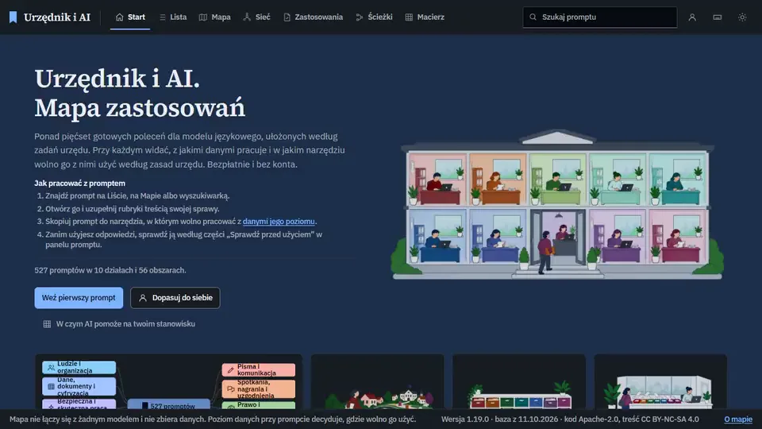

Działa publicznie · v1.4.0React 19TypeScriptPlaywright
Urzędnik i AI
Mapa 527 promptów dla administracji rządowej i samorządowej
Każdy prompt ma poziom danych, który mówi, w jakim narzędziu wolno go użyć; sam katalog niczego nie wysyła ani nie zapisuje, pilnuje tego test.
0 żądań sieciowych po załadowaniu · test E2E, 27.09.2026
Na żywo